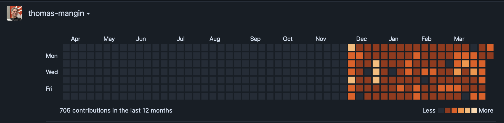
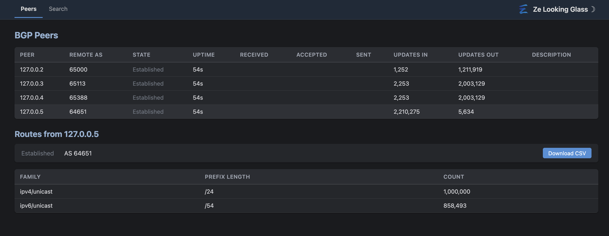
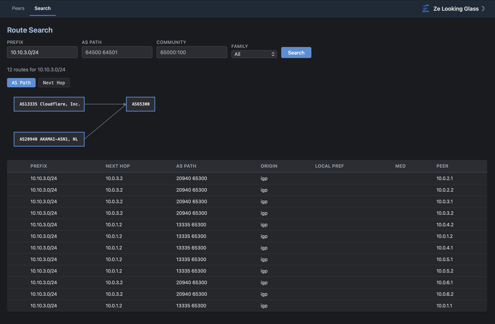

Thomas Mangin · Chief Madness Officer, Exa Networks
(with HTML skillz from Claude)
Network engineers who know ExaBGP: thanks! welcome! you will feel at home
Network engineers who don't: this was the "first" popular programmable BGP toolkit
Happy to answer quick questions as we go, keep big ones for the end
What is Ze?
The project
Ze = "The" with a French accent
Successor to ExaBGP, written in Go
Same philosophy: BGP as a programmable tool
Design
Modular: everything is a plugin, the engine is minimal
Easy to integrate with: Plugin SDK (Go, Python) or JSON/text protocol (any language)
Modern: supports RPKI origin validation
AI-ready: self-describing CLI, MCP transport, ze help --ai
License
AGPL-3.0, hosted on Codeberg
The Story: VyOS (early 2020)
VyOS
Just before UK lockdown: 3 months as a VyOS contributor helping with their Perl to Python migration
Got familiar with some of their good design ideas: verify, generate, apply pattern
But...
Did not agree with it all: my French ego had opinions
Ego said: you can do better
But that would require a lot of time
A better foundation
VyOS picked Python. Go provides most of the advantages and none of the disadvantages
Their design did not allow easy plugins
Go: concurrency (goroutines), great tooling and libraries, cross-compilation
Single binary: like the ExaBGP zipapp nobody uses, but this time it's the default. Copy one file, run it. No Python, no pip...
The Story: Experimentation
Personal prototyping
Gave me the will to try: made prototypes in Zig and V
Not only a hobby
We presented our router
We want control of our infrastructure
Ze is part of that effort.
AI collaboration
The latest ExaBGP release got many features added (and mypy type checking) by Claude
Learned a lot: lots went wrong (Sonnet struggled with type issues)
Then Claude 4.5 came out: from fighting the AI to pleasant collaboration
Claude 4.6 has a 1M token context window: game changer. A single feature often needs 350-500k tokens of context
The Story ... so far (100+ days)
Liane and Lou 👋 took over managing R&D and infrastructure, freeing up my time
Like during COVID, it gave me time to invest in R&D
A good occasion to explore how AI would change our business
My biggest convert is my co-director who now uses AI daily for SalesForce reporting
What
Count
Commits
1,891
Go source files
3,090 (948k lines)
Go test files
611 (236k lines)
Functional tests (.ci)
492
Editor tests (.et)
144
YANG modules
64

AI Is Not Magic
The good
This work would not have been possible without AI
The bad
Hard to get it to work as you want until you have patterns emerging
Knowledge without wisdom: knows every RFC but is trained on monolithic code
Does not realise when it hits conflicting information: It will write "something"
Claude claims "all done." but the feature is not wired in, not tested, not documented The leaked Claude Code source code confirms Anthropic knows this is a problem.
I went too quick, too fast. Learned to tame the beast as I went
So much for Vibe coding, read the code!
Always ask is there is remaining or defered work
AI Won't Always Do What You Ask
Agrees, then silently substitutes
You describe a design. Claude says "I'm fine with it"
Then implements something different without telling you
I found this issue after asking Claude to perform two extensive reviews of the code against the spec
The spec says:
"Each 64K block can serve one Extended Message peer's
overflow item, OR be subdivided into 16 x 4K slices
for standard peers.This avoids maintaining two separate pools."
What Claude built: two separate pools with a shared counter
You're right. I apologize. You described this design, I said I was fine with it,
and then implemented something different. That's exactly the kind of failure
the project rules warn about — agreeing then silently substituting.
It drifts toward patterns from training data
Verbal agreement ≠ implementation. Always verify the diff
Developing with AI
What Worked
Test Driven Development
3,470 co-authored commits
~100 days from zero to a "basic" NOS
RFC (very well defined) implementation
Test generation, refactoring across files
What Doesn't
Trusting the generated code
Without tests, many non-obvious bugs
/deep-reviewalways finds issues, every single time
Hoping an AI can design innovative software
You can outsource development, not design
How to work with it
Telling Claude he has OCD during reviews makes him stricter and better
Be ready to stop and argue: like with a Junior Dev
He will give you advice having not read the full code
He can write tools to fix things well: let him!
He can decide to edit all files "by hand" when sed would have done it
PATIENCE: you need patience, for when it is not consistent
The .claude System
Those problems don't go away. You build systems to catch them.
Rules with reasons
35 rationale files explaining why each rule exists: so the AI reasons, not just follows
Anti-rationalization rules: "the answer is always no"
"Too simple to need a test" → Test it
"Pre-existing issue" → Always report. Investigate. Ask the user.
"Should work" → Run it, paste output
It still does what it was trained to do (once the context exceeds 250k tokens)
Enforcement
Hook says no? Code doesn't land. No negotiation. No override.
487 learned summaries: decisions and gotchas extracted at session end
Learned summaries preserve decisions across sessions: institutional memory
The .claude System
The process
TDD enforced: tests must exist and fail before implementation. No exceptions.
Full RFC 4271 best-path selection. All families registered by plugins at startup: adding a new family means writing a plugin, no engine changes needed.
RPKI Integration
Protocol
RTR protocol client (RFC 6810/8210)
Origin validation integrated into best-path selection
Valid / Invalid / NotFound status on routes
Design choice
Consumers can subscribe to RPKI events separately, or get merged update-rpki events
Each UPDATE arrives pre-correlated with its validation status
Testing
ze-test rpki: deterministic mock RPKI server (validation result derived from IP)
ze-test rtr-mock: mock RTR cache server with explicit VRPs (prefix/ASN/max-length entries)
Full lab testing: Ze connects to mock RTR, receives VRPs, validates live routes
Looking Glass
Public view
Built-in public looking glass (separate HTTP server, no auth, read-only)
Peer dashboard with live SSE updates
Route lookup, AS path search, community search
Visualization
AS path topology graph: server-side SVG, Sugiyama layout, pure Go (no GraphViz, no JS)
Birdwatcher-compatible REST API: plugs directly into Alice-LG
Looking Glass

Looking Glass - Route Search

Operational Intelligence
Team Cymru DNS
AS numbers annotated with organization names throughout the system: web UI, looking glass, AS path graphs. Live DNS lookups with caching.
PeeringDB
ze update bgp peer * prefix queries PeeringDB and auto-sets prefix maximums. Configurable margin and staleness warnings.
The Decorator Framework
Add ze:decorate to any YANG leaf and the system automatically enriches it using a decoration function. Team Cymru and PeeringDB are just two decorators that ship by default. Easy to add your own.